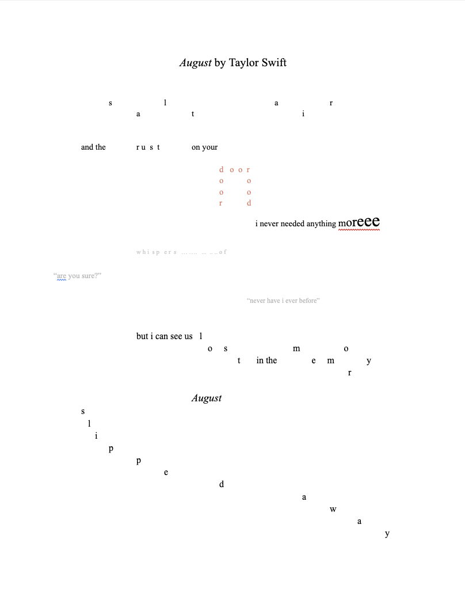
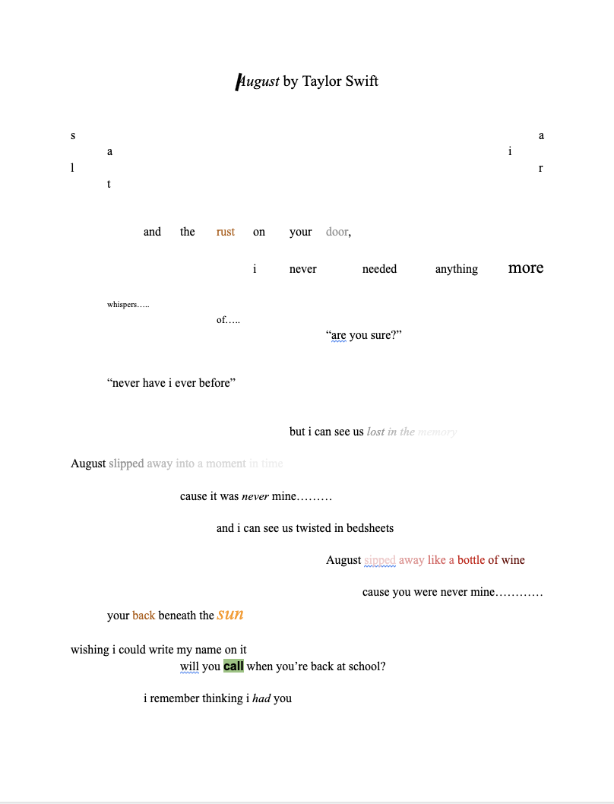
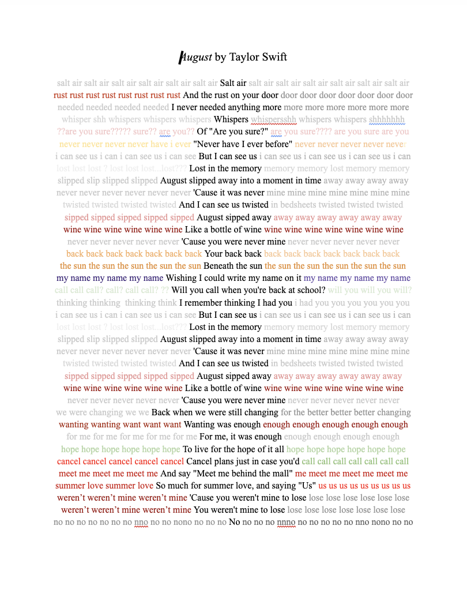

For this project, we had to choose a song and recreate the lyrics only in HTML in a way that makes sense contextually with the song. I chose August by Taylor Swift, which was my favorite song at the moment. The song is about a fleeting teenage secret relationship, and I attempted to convey this sense of quietness and feeling of slipping away with the gray texts. There’s also this echoing effect that’s being implemented in the song, which I recreated with the repetition of the lyrics in each line, which ultimately framed them and held an overall structure for the website.
I’ve also experimented a lot with different effects, including those that take the lyrics quite literally and creating a visual effect with the words by spacing them out or rescaling them. Below are some initial sketches I created with google docs with the effects that I was discussing. For the final draft, I decided to go with the last sketch because I realized that I could actually do a lot with such a simple structure and created this visual effect of a ripple through the change in darkness of the gray fonts in each line.



I learned from this project that simplicity is key. From the very start with the sketches and concepts, I really wanted to create these creative but far-fetched visual elements with my website, which I later realized was just too much and complicated for this project. Once I started looking at the simpler sketch, I was able to draw a lot more interesting and impressive ideas and build onto them. With the simpler sketch, I was also able to construct my website with a much stronger base and develop better ideas with them.